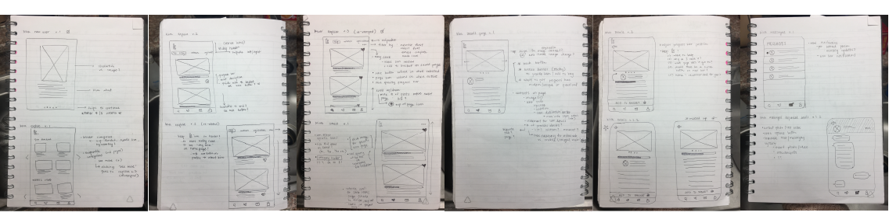
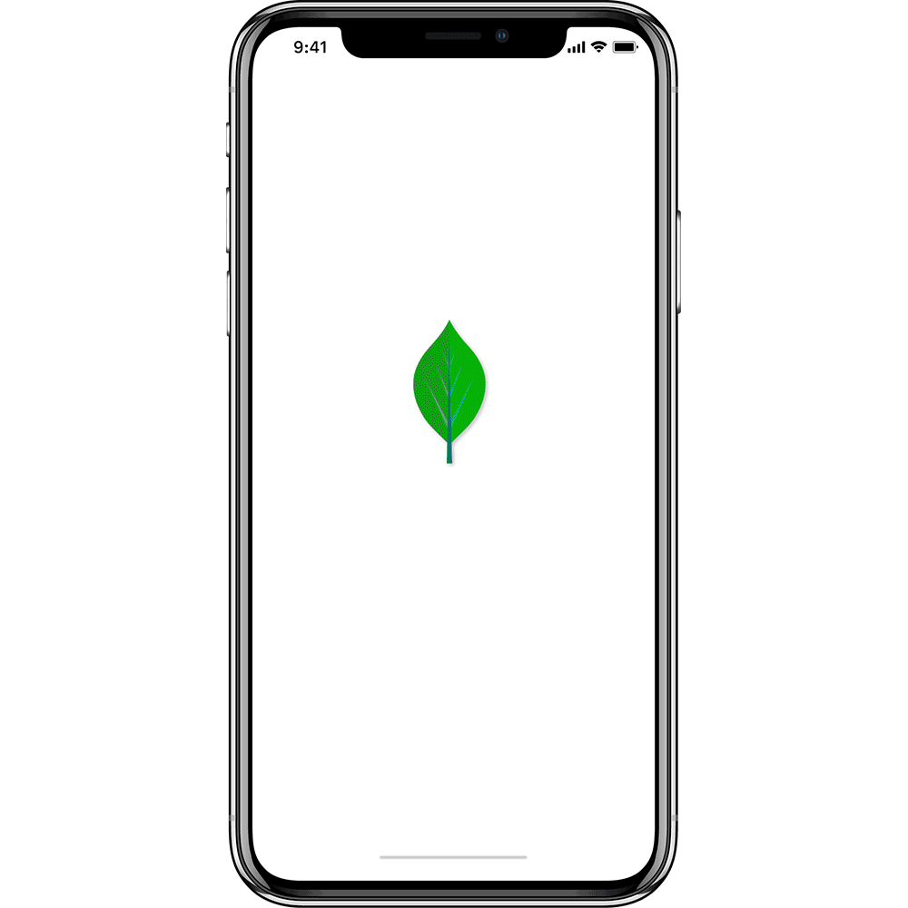
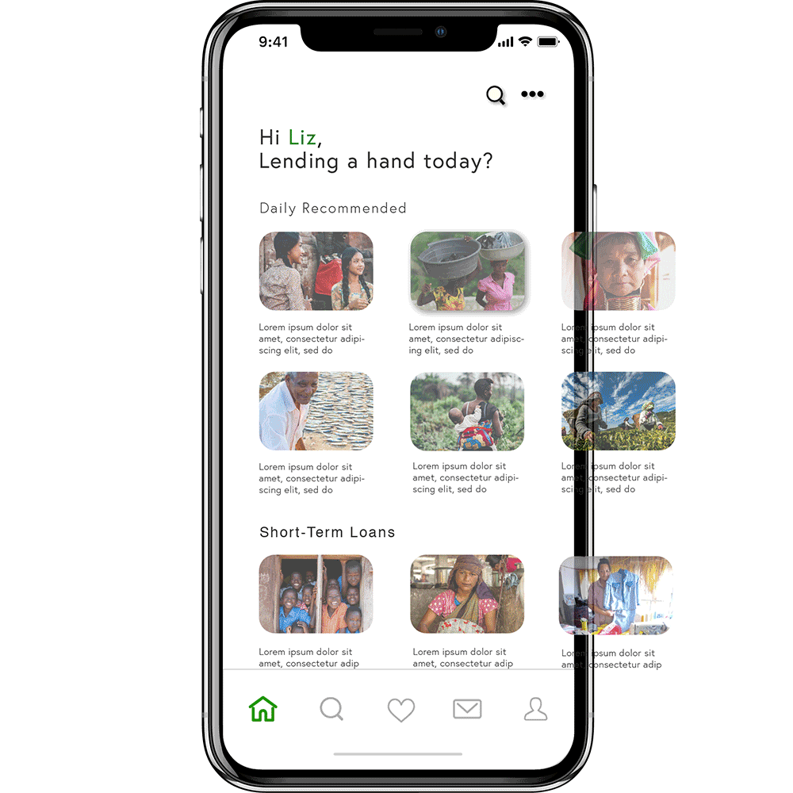

INDIVIDUAL PROJECT: Ashley Chen
Kiva is an international micro-loan service that aims to help create opportunity and lift individuals to a better state of being. After conducting a design sprint with my teammates at UCI to re-vamp Kiva's current website, I later tok the initiative to imagine Kiva as a mobile application (below).
User Testing
|
UI Mockups and Wireframes
|
|  |
During my group's efforts in re-imagining Kiva's website and bringing it into a more contemporary age, we learned that Kiva only recently made their website mobile-responsive. After graduating from UCI's UX/UI Design Extension Program, I decided to follow up our web re-design with a mobile prototype.
Initially, we learned that the problem lies in how the modern technology-user views services where they let their money go (i.e. e-commerce, charities, crowd-funding, etc). Of over a fifty individuals in our study, 46% of individuals ages 22-37 and 40% of individuals ages 38-53 currently donate to charitable and/or crowdfunding campaigns.
After reaching out to a ~20 more users from our target audience, our previous data was validated: 25% of total respondents currently complete their donations on mobile devices, and 51% said an app that simplified online giving without the bulk and skepticism would increase overall conversion and traffic. Of the 51% of individuals whose interests were piqued by a simplified app, 80% said having a mobile app that fits within the constraints of a fast lifestlye would similarly increase their willingness to make opportunity a reality for another.
Again, to determine the prime features Kiva needed to demystify microloans for its users, I surveyed another ~20 individuals and asked them to rate differents features on a scale from 1 (least desired) to 5 (highly desired).
|  |
Moving Kiva onto a mobile platform meant that it's users will generally open the app with intention. To simplify ease of use and increase transparency, I chose to use Kiva's core values as the defining feature of the new user experience, to help the user undertand - throughout their experience on the mobile app - what they are contributing to.
We designed a feature that allows users to see at a glance key features of a cause + what story they want to be a part of - every step of the way - without complicating the process.
|  |
As opposed to the e-commerce approach we took for our website redesign, the more I realized that the experience differed greatly in a mobile application for charitable services. I took a lot of inspiration from AirBnB, due to the ease of use and discoverability factor. By limiting the bulk, and filtering by category and location, our users can scroll learn about stories that they want to play a role in, and gather more information throughout the process through the save/bookmarking tab.
Users also wish to create a lasting relationships with individuals that they help with their microloan, so by allowing them to be a text message/email away from the third party service provider that Kiva partners with internationally to make micro-financing possible, users can reap the benefit of knowing they helped elevate an individual out of poverty or a bad financial situation.
Users have the chance, throughout their entire experience on Kiva, to learn and actively engage in someone's story. By providing a simple, yet thorough flow of the app, all parties can benefit - the user can build connection with causes that have lasting effects, the lendees have a support system to help elevate lives, and Kiva can increase average conversion rates by ensuring commited, returning users.
Redesigning Kiva as a mobile application individually was a challenge that I definitely grew from. I realized early on that the data gathered from my team's initial research focused (almost) solely for use in the redesign on the website. I took quite a lot of time interviewing and surveying more users from our target audience to gather more information on what users would want out of a mobile application. Luckily doing so validated what we originally discovered: the young adults of America are always on their phones, and while most of them want to help the needy, it sounds and looks like a hassle.
For the website, we created a solution that married the efficiency and simplicity of e-commerce, with the intention of charity. I needed a different approach for the mobile application; because looking through potential stories that you wanted to be a part of, is more intimate through your cell phone, I needed to strip it down to the necessities. User feedback on this one was tricky - they wanted something they can understand at a glance, allows exploration without complication, and lets them know where their money is going. I took inspiration from a variety of industries (i.e. GoFundMe, AirBnB, Yelp) to simulate an experience that was relatable, and easy to adopt.
My concept for Kiva | Mobile forced me to learn the ropes of mobile design very quickly, from the breakdown of Information Hierarchy, to mobile constraints, to weeding out the fluff. Getting user feedback throughout the process allowed me to take into consideration what struggles users faced. Although I only designed the user flow from onboarding to discovering a cause due to resource constraints, I hope to expand this project and grow my skillset in an industry that wants to improving the accessibility of "doing good" in this day and age.
{kind=link}